Серебро у XVII — XVIII веках в России
 Денежные реформы XVII — начала XVIII веков
Денежные реформы XVII — начала XVIII веков
Ефимки с признаком. Серебро рудников Нового Света использовалось для чеканки российских монет. После того как испанский король Карл стал императором Германии (1519 — 1556 гг.), в его владениях «никогда не заходило солнце». Экономический центр, однако, оказался в Нидерландах. С одной стороны, антверпенские купцы стали такими же подданными испанского короля, как и купцы испанских городов, и стали добиваться доли при дележе колониальной добычи, в том числе серебра.
А с другой стороны, при этом происходил процесс, согласно которому страна, где деньги «находят в их телесном образе, как это было в Испании», беднеет, в то время как страны, «которые вынуждены работать для того, чтобы выкачивать деньги у испанцев», развивают свое национальное хозяйство и действительно обогащают-ся. В 1566 г. в Нидерландах началась революция. Страна разделилась на две части, причем южная часть оставалась под властью Испании В 1648 г. Испания признала независимость Голландии.
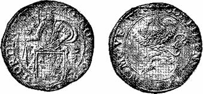
Рис. 82. Голландский талер — «левок».
Крупное значение для Голландии имела торговля с Россией. Так, в 1624 г. русско-голландские торговые сделки оценивались в два миллиона талеров. В числе товаров, ввозимых голландцами в Россию, были чеканенные из серебра Мексики и Южной Америки талеры — «левки», называемые так иг, —за изображенного на гербе льва (рис. 82). В России «левки» по сравнению с другими талерами ценились ниже вследствие более низкого содержания в них серебра.
Основной монетой в России продолжала оставаться серебряная копейка. До интервенции польско — шведских феодалов масса ее была 0,68 г, а затем к 1643 г. снизилась до 0,46 г. Пользование только одними мелкими копейками при крупных платежах было очень неудобным. В связи с этим в 1654 г. царь Алексей Михайлович решил выпустить в обращение рублевую серебряную монету, равноценную талеру. Оставив в обращении мелкие серебряные копейки, царь выпустил рублевую мо — нету. Одновременно началась чеканка медных полтинников, а затем и медных копеек, по размерам и виду не отличавшихся от серебряных и приравненных к ним по цене. В связи с отсталой ручной техникой чеканка рублевых монет была прекращена и взамен их в обращение были выпущены «ефимки с признаком» — серебряные талеры с надчеканкой на них двух клейм: изображения царя на коне и даты «1655» (рис. 83). Приравнены они были уже 64 копейкам. Реформа окончилась Московским восстанием 1662 г. — «медным бунтом». «Медный бунт» был поднят народом, так как чеканка медных копеек на 400 рублей из пуда меди привела к их полному обесцениванию и в конечном счете к финансовому краху; царь был вынужден вернуться к прежней денежной системе. Серебряный счетный рубль, содержащий 46 г серебра, сохранился до первого года регент-ства царевны Софьи, снизившись затем до 38 г.
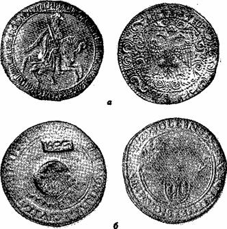
Рис. 83. Рубль новодел Алексея Михайловича (а) (9 /10 натур. вел.) я «ефимок с признаком» на талере гг. Цволле, Кампен и Девентер, 1555 г. (б).
Новые монеты. В конце xvii в. Россия становится крупнейшей державой мира, протянувшейся от Днепра до Охотского моря. Растет и бюджет страны. Так, если при «восшествии на престол» Петр I располагал только 1,75 млн. руб., то в 1704 г. государственный бюджет составил уже 3, 24 млн. руб., а в 1725 г. — 9,8 млн. руб. Тем не менее к 1700 г. основной монетой России оставалась копейка. Масса ее к этому времени уменьшилась до 0,28 г. Выбор этот Петром I был не случаен, так как снова встал вопрос о выпуске крупной серебряной и мелкой медной монеты.
В течение 1700 — 1704 гг. были выпущены в обращение медная денга, полушка и полуполушка, затем серебряные полтины, полуполтины, гривна, десять денег (пять копеек) и алтын. Последними вышли серебряный рубль, весивший, как и талер, 28 г, и медная копейка (рис. 84). Серебряная мелкая копейка продолжала чеканиться наряду с медной до 1718 г, являясь для нее своего рода проводником. В период с 1700 г. и до конца царствования Елизаветы Петровны много раз изменялся внешний вид монет, и в монетную систему вошли почти все номиналы, существующие в настоящее время.
Для изготовления новых монет требовалось все в больших количествах сырье — серебро, медь и золото. В 1700 г. был создан Рудный приказ, переименованный в 1719 г. в Берг-коллегию. Разведка недр всячески поощрялась.
В горном узаконении Петра I от 2 ноября 1700 г. говорится: «Великий государь указал для пополнения золота и серебра в своем великого государя Московском государстве, на Москве и в городах сыскивать золотых, и серебряных, и медных, и иных руд». За всякую утайку такой находки царь грозил жестоким наказанием.
«Горная привилегия», опубликованная 10 декабря 1719 г., сообщает, что «соизволяется всем и каждому дается воля, какова б чина и достоинства ни был, во всех местах, как на собственных, так и на чужих землях — искать, копать, плавить, варить и чистить всякие металлы».
Однако результаты стали ощутимо сказываться лишь в 30 — 40-х годах XVIII в. А пока Петру I пришлось предпринять целый ряд мер для привлечения в казну металлов, главным образом серебра и золота. Так, в 1720 г, когда было отчеканено серебряной монеты 70-й пробы на сумму 660 тыс. руб., было израсходовано 13 тыс. кг серебра. Общий итог чеканок серебряной монеты при Петре I составил 38, 4 млн. руб. Израсходовано на них было 750 тыс. кг серебра, а добыто в России за этот же период, как это будет видно ниже, на Нерчин-ских месторождениях лишь 2000 кг серебра. Таким образом, чеканка по-прежнему велась из привозного — «пришлого» серебра.
Перечеканка ефимков. Талеры-ефимки, являвшиеся сырьем для изготовления серебряных монет и изделий, поступали в Россию в виде пошлины за ввозившиеся в Московское государство товары. Вместе с товарами они поступали главным образом из немецких земель (любские, т. е. из г Любека, гамбургские и др.), из Голландии, Швеции (свейские), Польши, Австрии (цесарские) и других стран.
По свидетельству Н. К. Карамзи-на, ефимки привозились в Россию также и в виде товара до 80 тыс. штук, в одной партии, причем и пошлина с них взималась, как за товар.
Значение ефимков для Московской Руси охарактеризовано в наказе таможенным головам «О сборе таможенных пошлин в городе Архангельске», изданном в мае 1699 г., в котором говорится, что «ефимки на Москве идут в денежный передел, и от того великого государя казне прибыль, а купецким людям в торгах пополнение».
Как видно из этого документа, правительство Петра I прежде всего было озабочено обеспечением «де-нежного передела», так как ефимки составляли главную массу сырья, из которого чеканились серебряные мелкие копейки конца XVII в. и серебряные монеты новой монетной системы.
Как правило, монеты Петра I чеканились на круж-ках, вырубленных из серебряных листов Но нередко при чеканке рублевых монет вместо кружков использовались равные рублю по весу и размеру талеры.
На самых первых рублевых монетах (см. рис. 48) Петр I изображен в легких латах, из-под которых виден небольшой стоячий воротник одежды. И в дальнейшем его портрет на моне-тах хотя и менялся неоднократно, но нигде Петр I не изображался в отложном воротнике. В связи с этим чуть было не произвел «переворота» в иконографии Петра рублевик, где на Петре I под латами одежда с отлож — ным воротником. Но если повнимательней приглядеться к этому рублевику, то можно заметить еще одну инте-ресную деталь: на груди русского двуглавого орла име-ется маленький одноглавый «орлик», а справа и слева от него следы горизонтальной и наклонных прямых ли-ний. Легко сделать вывод, что эти детали являются остат-ками каких-то прежних изображений и, следовательно, этот экземпляр рубля был изготовлен путем перечеканки из равновеликого ему по массе талера.
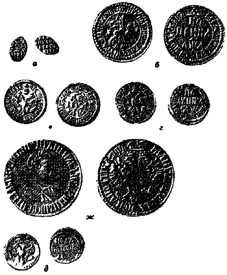
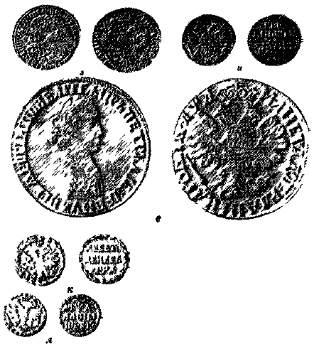
Рис. 84. Монеты Петра I:
а — серебряная копейка медные;
б — копейка;
в — денга (4/5 натур. вел.);
г — полушка полуполушка серебряные;
e — pубль;
ж — полтина;
з — полуполтина (3/4 натур. вел.);
и — гривенник (3/4 натур. Вел.);
л. — десять денег;
л — алтын.
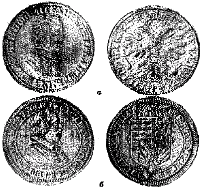
Рис. 85. Рубль Петра I, 1705 г. (а) (9 /10 натур, вел.) и талер епископа Пассауского 1620 г. (б) (9 /ю натур, вел.)
Но что это был за талер? Зная геральдику XVII в., нетрудно установить, что в центре сложного гербового щита, встречающегося на талерах графства Тироль, есть маленький одноглавый орел и вокруг него гербы других австрийских владений. А в коллекции, насчитывающей хотя бы десяток тирольских талеров XVII в., обязательно найдется подобный талеру 1620 г., когда Тиролем управлял австрийский эрцгерцог Леопольд, являвшийся одновременно епископом Пассауским и показанный на талере в соответствующей этому духовному сану одежде.
При перечеканке талера в рублевик (рис. 85) в связи с дефектом штемпеля отложной воротник епископа сохранился и удивительно точно попал на шею Петра I.
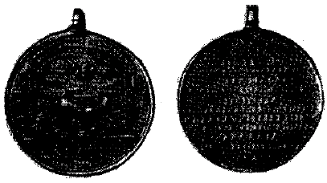
Рис. 86. Серебряная медаль в честь Ништадского мира, 1721 (9 /10 натур, вел.).
Серебро ЗабайкальяПервым нумизматическим памятником, о котором доподлинно известно, что он изготовлен из отечественного серебра, была серебряная медаль в честь Ништадтского-мира от 1721 г. (рис. 86). На ней выбито, что сделана она «из серебра домашнего».
Государственная добыча отечественных руд серебр»а в России началась на Нерчинских рудниках Большой и Малый Култук; выплавлялось серебро на Нерчинском заводе в Забайкалье. Относительно истории открытия месторождений и организации добычи серебра приводятся разноречивые данные. Так, П. фон Винклер считает, что Нерчинские рудники были открыты около 1691 г., Н. Н. Свитальский сообщает, что рудники Большой и Малый Култук были открыты в 1704 г. и в том же году начал работать завод, Ф. Д. Бублейников сообщает, что месторождение на горе Култук открыл в 1701 г. Левандиан «в глубоких ущельях этого края». В «Очерках истории СССР» указывается, что добыча серебра в Нерчинске началась в 1705 г.
История открытия нерчинских серебряных руд и организация сереброплавильного завода изложена А. А. Кузиным. По его данным, нерчинская серебряная руда была открыта 29 июля 1678 г., в 1689 г. было решено построить на р. Аргунь серебряный рудоплавильный завод, основание которого относится к 1700 г., а пуск был осуществлен в 1707 г.
В. И. Ленин о Забайкалье. Подробная история открытия нерчинских серебряных руд и строительства завода показана в рукописи В. И. Геннина «Абрисы», которую следует считать достоверной, так как Геннин был современником событий, и рассказ ведет на основании «реляции»
П. Дамеса, управляющего Нерчинским заводом Геннин пишет, что Дамес «в 1714-м году прибыл в Нерчинск, взял настоящие о тех рудах ис канцелярии ведомости, в которых показано, что тунгусской нации два брата имянем один Аранжа, другой Мани — первые медных и серебряных руд искатели были. И потому от него, Дамеса, они призваны и спрашиваны и доносили ему то же, что аргунские серебряные руды сыскали и объявили они. И паки от него спрашиваны, через который случай они искали те аргунские руды». Братья ответили, что еще в молодости бывали они в тех местах на звериных ловлях. «Тогда оный дистрикт был не под мунгальским, не под российским владением, по вольной. В то время сперва наруже земли куски руд они ви-дяли и думали, что те куски не простые вещи, и того ради некоторые куски взяли они с собой». Об этом узнал тайша (князь), вызвал их к себе и отобрал образцы. Затем «в 1672 году послал он, тайша, из означенных двух рудоискателей одного брата и с ним несколько мунгалов с семью верблюдами с таким повелением, дабы они, сколько возможно, помянутых руд на тех верблюдах привезли. И по тому они и учинили. А куда им от тайши далее ехать велено, о том неизвестно».
«… В 1691 или 1692 гг. прибыл в Нерчинск бывший адмирал Федор Алексеевич Головин… В то же время в Нерчинску был воевода Иван Остафьевич сын Власов. Ему вышепомянутые два брата рудоискатели тех руд объявили, который взяв ему, адмиралу Головину, об оных рудах не доносил, а объявил их бывшему тогда в ево, Головина, штате иноземцу имянем Лаврентью Нейгарту. Он, Дамес, мнит, что был тот иноземец, который Казанские медные заводы ведал.
И просил ево оной воевода нерчинский, чтоб он, как возможно, те руды опробовал, что он по той пробе и учинил, не объявя ему, Головину Но потом он, адмирал Головин, о сем уведал и приказал ево за ту утайку жестко штрафовать, хотя он, Нейгарт, в то время и пра-порщиком был. И с того времени в России первое на-чатие в серебряном плавлении стало быть».
По прибытии в Москву Головина, оттуда были направлены четыре плавильщика, но они оказались неквалифицированными. «… И так оные руды хотя они уже знаемы и в славе были, остались без всякого произведения до 1702-го года. Когда гречанин Александр Леван-диан, оной несколько искусства имел по греческому обык-новению в горных и плавильных делах, и когда он об оных рудах уведомился, то взял он некоторое число пуд и учинил пробу своим коштом и тое пробу послал к сво— им теварищам для объявления в Сибирском приказе, на что и указ из онаго приказу получен в 1704-м году, по которому велено в Нерчинском присудствии в Аргун-ском остроге, на речке Серебрянке, по объявлению нер-чинских ясашных иноземцев, вышепоказанных Аранжи да Мани с товарыщи, серебряных и других руд, какие сыщутся, плавить рудоплавильным мастерам гречанину Александру Левандиану с товарыщи наемными людьми. И с того году российскими работа тамо началась: до — быча руд в старинных шахтах и начатие завода и плав-ка серебра…».
«Когда по посланной пробе от вышепомянутого гре-ка Левандиана в Сибирской приказ указ из онаго при-слан о строении тамо завода и о плавке серебра, то оной Нерчинский завод зачат строить в 1704-м году на речке Серебрянке и строен вольными наемными работниками и приписаными к тем заводам крестьянами». Нерчинскозаводские месторождения серебро-свинцо-вых руд располагаются по линиям северо-восточного простирания, приурочиваясь к разломам. Насчитано около 540 месторождений, но практически разрабатывалось только 120,и лишь несколько десятков могут счи— таться более или менее крупными.
По форме месторождения делятся на три группы: пластовые жилы и залежи в доломитах и известняках или на их контактах со сланцами и песчаниками; тре-щинные секущие жилы чаще в силикатных, реже в кар-бонатных породах; трубчатые и гнездовые рудные тела доломитах или известняках. Большинство месторождений представлено вкрапленными рудами, сплошные руды наблюдаются очень редко. Первичными рудными минералами являются пирит, галенит, сфалерит, арсенопирит, нередко булан-жерит и пирротин; в отдельных случаях халькопирит, марказит, касситерит и другие минералы. Нерудные минералы представлены кальцитом, доломитом, кварцем, серицитом, турмалином. Серебро фиксируется во многих минералах, но главным образом в галените. Зона окисления простирается здесь до глубины от 10 до 100 м, иногда даже до 200 м.
Месторождения серебро-свинцовых и цинковых руд в Забайкалье рассеяны от Шилкинского завода на р. Шилке и Култуминского на р. Газимур на севере до Кличкинского на р. Урулюнгуе на юге, но особенно их много на площади к западу от Нерчинского завода.
В Забайкалье за первые 200 лет эксплуатации было получено 1523 840 т руды, из которых извлечено 470 тыс. кг серебра и 43 тыс. т свинца. Как указывал В. И. Геннин, «оного серебра в год выплавлялось не по равному числу, а именно от полу, от одинакого и до 6-ти пуд., а с 731-го году за пресечением руд плавяш серебра ничего не было».
«Пресечение» руд на рудниках Большой и Малый Култук произошло, видимо, в связи с отработкой выявленных еще древними — чудскими рудокопами месторождений и отставанием поисковых работ. Геннин (в противоположность Ф. Д. Бублейникову) подчеркнул, что «… Нерчинский дистрикт состоит в горах… стоит часто гора за горою округлистые и показуются, как холмы, и иные будто великие сенные стоги. По тамошнему называются те горы сопками… А камня мало видно, токмо где реки текут, тут камень виден».
Сейчас геологам известны трудности поисков рудных месторождений в таких «закрытых» районах. Рудоискателям же первой половины XVIII в. было еще труднее. Тем не менее положение с сырьевой рудной базой для Нерчинского сереброплавильного завода после открытия Старо — Зерентуйского (в 1739 г.), Благодатско-го (в 1745 г.), Верхнего, Среднего и Нижнего Ново — Зерентуйских (в 1747 г.) и некоторых других рудников несколько улучшилось. К 1750 г. ежегодная добыча серебряной руды стала столь значительной и площадь, на которой разбросаны месторождения, оказалась настолько обширной, что явилась необходимость в постройке новых заводов. Так, начиная с 1760 г., стали строиться Кутомарский, Шилкинский, а затем Газимурский и другие заводы. Рудоискатели Нерчинского завода к 1763 г. открыли большое количество новых месторождений.
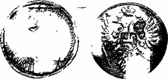
Рис 87. Рубль 1734 г. с инициалом «В».
Последнее «пришлое» серебро. Итак, в России уже производилась собственная добыча серебра, но она была еще крайне незначительной. В 1731 — 1733 гг. добычи не было совершенно, и чеканка монет осуществлялась за счет переплавки и передела серебра, поступавшего из-за границы или в результате выкупа и изъятия из обращения старых русских серебряных монет, особенно мелких «проволочных» копеек.
Имеется интересная рублевая монета 1734 г. (рис. 87), на оборотной стороне которой сохранились остатки надписи, свидетельствующие, что она перечеканена из другой монеты. Почему она избежала обязательной в то время участи других монет — переплавки? На первой ленточке наплечника царицы внизу имеется буква «В», являющаяся первой буквой фамилии медальера Васильева, вырезавшего штемпель монеты. Автор этих строк доказал, что руке Васильева принадлежат штемпеля рублевых монет всех предыдущих типов 1734 г., т. е. что он создал почти столько же оригинальных типов рублевых монет, сколько работавшие в 1730 — 1740 гг. — во время бироновщины — иностранные медальеры Шульц, Гедлингер, Фукс и Лефкен вместе взятые.
Экземпляр, показанный на фотографии (см. рис. 87), , является, может быть, одним из самых первых среди небольшого количества пробных монет такого типа (в серию они пошли без буквы «В»), ибо отчеканен не на серебряном рублевом кружке — заготовке, а на равной ему по весу какой—то зарубежной монете. Это последний по времени известный случай перечеканки иностранного талера в русский рублевик.
В. Н. Татищев о серебре. Первое в русской литературе краткое описание отечественного серебра как полезного ископаемого относится к 1736 г. Автором описания является В. Н. Татищев, а содержание его следующее.
«Серебро по золоте во всех обстоятельствах пред протчими есть лучшее. Во употреблении же денег может за первую (металлы — М. М.) почитаться, зане оное наиболее протчих в то употребляемо. В Сибири доднесь оное токмо в Даурии обретено, и при Аргуни заводы казенные построены, где каждогодно по 10 до 15 пуд добывали, и становится пуд около 400 рублев, которое отдается для розделения (с золотом — М. М.) и передела в деньги на денежные дворы. Сия руда, имянуе-мая блейгланц, находится наиболее гнездами, для которого добыча ея непостоянна. Сверх сего в западных горах Уральских около вершин Белой и Яика находятся разные серебряных руд признаки, токмо или оной руды весьма мало или убога, что труд и расхода платить не может, не токмо впредь ко обретению подается надежда. Наипаче же горы Саянские обретенными при текусчих из оных реках каменьями обнадеживают быть тамо серебряным рудам, но за отдалением от жилья во оных пустотах искать прилежнее неудобно, разве когда в Красноярску и Кузнецку медные заводы построят, и люди тамо поселятся, то лучшие к дальнейшему оных гор способы подадутся».
В цитате В. Н. Татищева (если не останавливаться на, вероятно, впервые в нашей литературе упомянутом методе поисков по валунам и обломкам в речных отложениях) представляет наибольший интерес указание о размерах добычи серебра в Нерчинских рудниках: «каждогодно по 10 до 15 пуд», ибо за последние 30 лет в самых солидных исторических работах советских ученых, начиная с А. В. Хабакова, стала фигурировать необъяснимо высокая цифра добычи в 1705 г. в 2, 2 тон-ны, или 130 пудов, в то время как в 1705 г. было добыто около 25 кг.
С данными В. Н. Татищева достаточно точно совпадают те, которые, как это было показано выше, привел В. И. Геннин в «Абрисах»: «Онаго серебра в год выплавлялось не по равному числу, а именно от полу, от оди-накого и до 6-ти пуд, а с 731-го за пресечением руд плавки серебра ничего не было».
Из документов монетного двора
Добыча нерчинского серебра после ее «пресечения» в 1731 г. возобновилась в 1734 г., и к сентябрю 1736 г. из Кабинета ее величества поступило на монетный двор около трех пудов и около полутора пудов серебра с Медвежьего острова. К этому же времени на монетном дворе появились штемпеля рублевой монеты нового типа.
Серебро Медвежьего острова. Хотя государственная добыча, как показано выше, началась в Нерчинске в 1704 г., кустарная добыча и кустарное использование серебра в России возникли значительно раньше и совсем в другом районе — на Медвежьем острове.
Рубль Анны Ивановны (Иоанновны) чеканки 1736 г. (рис. 88) является первым «опознанным» изделием из медвежьеостровского серебра. Архивные же материалы говорят, что еще в 1669 г. добытое крестьянами — поморами серебро Медвежьего острова служило серебряникам Кирилло — Белозерского монастыря сырьем для изготовления крестов, чаш, подсвечников, голубей и другой утвари церковного культа.
Рубль отчеканен штемпелями работы Гедлингера[33] и является украшением любой нумизматической коллекции. Из рублей Анны Ивановны по редкости и важности он стоит на втором месте после знаменитой «Анны с цепью» 1730 г., так как при общем тираже 1047209 рублевых монет 1736 г. он отчеканен в количестве всего лишь 2671 экземпляра.
Каковы же причины такой ограниченности тиража?
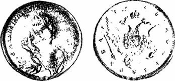
Рис. 88. Рубль 1736 г.
Достаточно ли убедительны обычно приводимые в этих случаях объяснения, взятые из предисловия к изданному в 1901 г. тому «Монеты царствования императрицы Анны Иоанновны», в котором говорится: «…Так как штемпель Гедлингера испортился, то московским резчиком Лукьяном Дмитриевым был вырезан в 1737 г. новый штемпель по гедлингеровскому образцу». Можно ли эти слова о порче штемпеля Гедлингера считать за непреложную истину и только ими объяснять ограни — ченный тираж гедлингеровского рубля?
Указание о количестве гедлингеровских рублевиков имеется в доношении от 19 апреля 1737 г. Канцелярии монетного правления в Кабинет ее императорского величества, в котором говорится, что к 15 января 1737 г. из переданного Кабинетом серебра были отчеканены штемпелями, изготовленными Гедлингером, серебряные медали «до сто рублевых монет…. а остальное серебро переделывается в рублевую монету, а ныне из того остаточного серебра, из четырех пуд десяти фунтов шестидесяти пяти золотников, по переделу вышло монет две тысячи пятьсот семьдесят один рубль» и остались лишь обрезки и крохи.
Из этого документа ясно, что тираж монет был ограничен 2671 экземпляром не вследствие порчи штемпелей, а потому, что кончилось предназначенное для их чеканки сырье — серебро. Но что это было за сереброг почему монеты из него чеканились новыми штемпелями работы знаменитого медальера с необычным портретом Анны и необычным рисунком орла? И почему монеты и медали из него учитывались отдельно? Гедлингеровский рубль является памятником не только медальерного искусства, но и добычи серебра в нашей стране.
16 сентября 1736 г. из Кабинета ее величества в Мо-нетную Канцелярию было сообщено, что «из отданного из Кабинета в Монетную канцелярию присланного из Сибирского приказа… серебра двух пуд тридцати пяти фунтов восемнадцати золотников трех четвертей, да привезенного с Медвежьего острова одного пуда девятнадцати фунтов десяти золотников ее императорское величе-ство указала, приведя в надлежащую указную пробу, сделать из … серебра с Медвежьего острова, новых же медалей пятьдесят, да рублевиков сто новыми штемпе— лями, а из Сибирского приказа серебро все переделать в рублевую монету».
И если теперь вернуться к доношению от 19 апреля 1737 г., то становится ясным, что в нем как раз и докладывалось о выполнении указа императрицы от 16 сентября 1736 г. Указ был выполнен, хотя и со значительным опозданием: 100 рублевиков из серебра Медвежьего острова были поднесены императрице 15 января 1737 г., т. е. через 4 месяца, а остальные 2571 руб-левик (с датой — 1736 год) были готовы к 19 апреля 1737 г., т. е. еще через 3 месяца. Правда, в этот срок, точнее — в первые 4 месяца, были проведены и металлургические операции: очистка серебра, выделение зо-лота из сибирского (нерчинского) серебра, приведение серебра в «указную пробу», прокат серебряных ли — стов, вырубка кружков, нанесение гуртового «панцирях Из изложенного видно, что рублевик 1736 г. является дважды памятным: и потому, что он отчеканен штемпелями работы Гедлингера, и потому, что для его изготовления было использовано отечественное серебро, добытое на Медвежьем острове. При формулировке этого вывода очень напрашивается поставить перед словом „добытое“ слово „впервые“, однако серебро Медвежьего острова, находящегося в Порьегубском заливе Кандалакшской губы, добывалось много раньше — 310 лет назад. Весьма интересные обстоятельства его открытия, подробно изложенные А. А. Кузиным, коротко сводятся к следующему.
Белозерский дворянин Петр Моложенинов в 1669 г, получил царскую грамоту о сборе сведений об известных в крае рудах. От мастеров серебряного дела Ки-рилло-Белозерского монастыря, в том числе Еремея Попова, он узнал, что незадолго до этого из Умбы — вотчины монастыря на берегу Белого моря — были привезены 13 фунтов серебра в виде неправильной формы слитков — криц. В это время в монастырь прибыл строитель Ефрем Потемкин. Узнав о серебре, Потемкин поехал «доклада ради» в Москву. В Москве начались допросы Потемкина и других монахов и серебряников из Кирилло-Белозерского монастыря. Выяснилось, чта из самородного серебра, привезенного с Умбы, делали серебряные вещи, но установить место залежи серебряных криц не удалось. В район Белого моря из Москвы был направлен ряд экспедиций на поиски месторождений самородного серебра (1671, 1673, 1676, 1680 гг). Все они находили на Медвежьем острове в ямках на берегу моря небольшие крицы серебра, возможно, специально подброшенные, так как крестьяне района Мед — вежьего острова не выдавали точного места добычи серебра, являвшейся их промыслом.
Таким образом, изложенные факты позволяют считать, что русскому отечественному серебру сейчас свыше 310 лет.
В течение следующих более чем 50 лет серебром Медвежьего острова правительство не интересовалось а затем, по указу Анны Ивановны, житель с. Кандалакши Егор Собинский с компаньонами начал «обыскивать в Приморье рудные места». Но они нашли в Поморье в 1731 г. только свинцовую руду, которую начали разрабатывать в следующем году.
В это же время с восточного берега Медвежьего острова приносил самородки серебра Афанасий Полежаев. Через брата, у которого Полежаев работал батраком, об этом узнал Егор Собинский. Вместе с компаньонами он направился на Медвежий остров и, наконец, нашел там самородное серебро. Привезя с собой в Москву 14 кг, он передал его лично Анне Ивановне, за что получил в награду 3000 рублей и право основать рудоплавильный завод.
Однако вскоре все рудники Медвежьего острова перешли во владение генерал-берг-директора барона Шемберга (это было время бироновщины), организовавшего добычу серебряной руды на Медвежьем острове в широких масштабах и пославшего на рудники 300 крестьян и специалистов с Олонецких заводов. С 16 августа 1734 г. по январь 1735 г. здесь было добыто 35 пудов 31 фунт серебра; с января по июнь 1735 г. — 10 пудов 30 фунтов серебра и 28 пудов 20 фунтов руды; с июня 1735 г. по январь 1736 г. — 16 пудов серебра и 100 пудов руды.
Еще 15 января 1739 года в докладе с Медвежьего острова сообщалось о новых небольших находках самородного серебра, однако уже в феврале 1742 г. была объявлено, что месторождение на Медвежьем острове выработано. Известно, что в 1745 — 1761 гг. периодически остатки серебряных руд с Медвежьего острова переплавлялись на Петровских и Кончезерских заводах. Последние сведения о серебряных рудах Медвежьего острова относятся к 1880 — 1883 гг., когда компания Фиксена добыла 2100 пудов руды. После этого рудники снова отошли в казну, и о добыче руды сведений больше не имеется.
По геологии сереброрудного месторождения Медвежьего острова имеется мало данных. Площадь Медвежьего острова настолько мала, что на карте масштаба 1 : 1 000 000 его нельзя показать.
К каким жилам было приурочено самородное серебро, ьеизвестно, так как сохранились лишь сведения о размерах его добычи. Вероятно, оно связано с гидротермальными кальцитовыми жилами. Жилы маломощные (до 50 см), часто выклиниваются в тонкие прожилки и разветвляются. В пустотах кальцита часто наблюдаются друзы и щетки кварца. Иногда совместно с кальцитом в небольших количествах наблюдается барит и флюорит. Рудные минералы — галенит и сфалерит — содержатся в кальците в виде неравномерной вкрапленности. Рудные вкрапленники иногда концентрируются в полосы, параллельные зальбандам жил. Максимальная прослеженная длина рудных жил 300 м, но и на этом расстоянии жила много раз выклинивается, переходя в трещину — проводник. Содержание свинца изменяется от следов до 14%, цинка — от сотых долей до 8%.
Четыре самородка серебра с Медвежьего острова были внесены в каталог Минералогического музея Академии наук еще М. В. Ломоносовым. Весят они по нескольку килограммов каждый и являются самыми крупными самородками, встреченными в нашей стране (см. рис. 1).
Остался, вероятно, вопрос: откуда возникла уверенность, что рублевик 1736 г. отчеканен из серебра с Медвежьего острова, а не из нерчинского? Его идеальный внешний вид при отличной сохранности, глянец (вместо обычного матового тона) на полях монеты, излишняя «подбористость» штемпеля (в результате которой при чеканке окончания некоторых букв отрывались) говорят о том, что рублевик отчеканен в числе самых первых экземпляров, когда штемпеля еще не «приработались», т. е. из серебра Медвежьего острова.
Нумизматическая эстафета донесла до наших дней два варианта этой монеты нового типа, отчеканенные двумя разными парами штемпелей, причем каждая из монет, как оказалось, представляет определенный геологический интерес.
На рис. 89 приведены фотографии двух рублевых монет 1736 г., заимствованные из крупнейшего дореволюционного каталога.
Выше было достаточно убедительно доказано, что монета (ем. рис. 89, б) отчеканена штемпелями работы швейцарского медальера Гедлингера из серебра Медвежьего острова. Но что сказать о второй монете? Чьей работы штемпеля, которыми она отчеканена, и из какого серебра? Ответить на этот вопрос помогает анализ нескольких документов Канцелярии монетного правления. Вот их содержание:
От 19 апреля 1737 г. (цитированный выше): вырезанными Гедлингером штемпелями были «напечатаны» к 15 января 1737 г. серебряные медали и 100 рублевых монет, а «ныне» из «остаточного» серебра «вышло» монет еще 2571 рубль.
От 26 мая 1737 г.: Гедлингеру 25 мая «при нынешнем его отсюда» отъезде выдано «жалования 4000 рублев».
От 5 августа 1737 г.: медальный штемпель работы Гедлингера треснул и копию с него сделал «резного штемпельного дела подмастерье Лукьян Дмитриев».
От 15 сентября 1737 г.: с 5 июня «монеты велено печатать» штемпелями работы Л. Дмитриева и уже «напечатано 257000 рублей», но с 17 августа рублевые монеты стали чеканить другими штемпелями, на которых надпись не имеет сокращений в титуле императрицы.
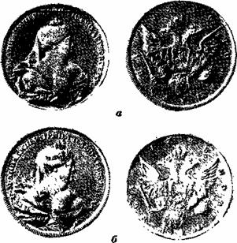
Рис. 89. Рубли 1736 г. (9-ю натур, вел.).
Таким образом, 15 января 1737 г. Анне Ивановне были поднесены медали и первые 100 новых рублеви-ков, а к 19 апреля изготовлено еще 2571 рубль с датой «1736». Гедлингер выехал в Швецию 25 мая, а уже 5 июня монеты было велено «печатать» штемпелями Л. Дмитриева с датой «1737».
Выше было упомянуто предположение о прекращении чеканки на 2671-ом рубле из-за поломки штемпелей. Но с этим нельзя согласиться. Во-первых, необходима отметить, что чеканка тиража закончилась к 19 апреля, а Гедлингер выехал из России через 36 дней после этого. Вряд ли его отпустили бы и вряд ли он сам, дорожа авторитетом первого медальера Европы, уехал бы из России, оставив монетный двор буквально у разбитого штемпеля. Скорее всего, ценя свое произведение и желая, чтобы оно просуществовало на монетах возможно дольше, Гедлингер, официально учеников не имевший, не мог уехать, не убедившись, что кто-то будет в состоянии возобновлять по его образцу довольно быстро портящиеся штемпеля. Во-вторых, к 5 июня, т. е. через 10 дней после того как Гедлингер уехал, были утверждены к «печатанию» штемпеля 1737 г., изготовленные талантливым русским мастером Л. Дмитриевым. Значит, работу над ними он выполнил еще во время пребывания Гедлингера в России, и последний должен был выразить одобрение новых штемпелей. В-третьих, как показано на рис. 89, эти два гедлин-теровских рублевика 1736 г. отчеканены заметно отличающимися штемпелями как лицевых, так и оборотных сторон.
Вывод напрашивается определенный: штемпеля по образцу Гедлингера Л. Дмитриев резал раньше, чем считали до сих пор, и рублевик с датой «1736», показанный на рис. 89, а, отчеканен штемпелями его работы. Этот факт оставался до сих пор незамеченным.
Тираж новых рублевых монет 1736 г. был ограничен тем, что кончилось специально выделенное для этой цели серебро. Действительно, если сравнить документ монетного двора от 16 сентября 1736 г., в котором давалось поручение сделать «из серебра с Медвежьего острова новых же медалей пятьдесят, да рублевиков сто новыми штемпелями, а из Сибирского приказа серебро все переделать в рублевую монету», с показанным выше документом от 19 апреля 1737 г., то становится ясным, что во втором документе докладывается о выполнении указания, данного в первом документе. Поскольку в задании поручалось в первую очередь сделать 100 рублевиков (и 50 медалей) из серебра Медвежьего острова, ясно, что это серебро пошло в передел первым, а пока оно полностью не было израсходовано, не могла начаться чеканка из сибирского серебра, так как это запутало бы учет, который, судя по другим документам, был очень точным.
Л. Дмитриев стал резать свои штемпеля, конечно, после того как штемпеля Гедлингера были опробованы, утверждены и переданы на монетный двор в работу. Новый портрет и новый герб существенно отличались от предыдущих, поэтому Л. Дмитриеву для резьбы пер-вой пары штемпелей пришлось затратить немалое время, и чеканка штемпелями его работы могла начаться уже в конце тиража. Поэтому нет сомнения, что рубль Л. Дмитриева отчеканен именно из «сибирского» серебра, как тогда называли нерчинское, оказавшись вторым памятником этому серебру после медали в честь заключения в 1721 г. со шведами Ништадского мира, на которой написано: «сия медаль из серебра домашнего» (см. рис. 86).
Итак, чеканкой рублевиков 1736 г. правительство отметило важные в жизни России события — организацию государственной добычи на руднике Медвежьего острова и возобновление (после перерыва в 1731 — 1733 гг.) еще очень небольшой по объему добычи серебра на Нерчинских рудниках.
«Проект и план …» И. А. Шлаттера. В развитии добычи серебра в Забайкалье сыграли большую роль предложения И. А. Шлаттера — известного государственного деятеля, ученого, крупного специалиста по металлургии золота и серебра, монетному и пробирному делу, а также горнорудному делу.
Чтобы лучше понять необходимость увеличения в конце 50-х годов XVIII в. добычи серебра, следует иметь в виду, что в 1751 — 1756 г. в России ежегодно чеканилось серебряной монеты (рис.
90) в среднем 2 млн. рублей, для изготовления которой требовалось по 40000 кг серебра в год. Но отечественные рудники в этот период давали лишь по 6000 — 7000 кг серебра в год.
И. А. Шлаттером был разработан и представлен 5 декабря 1755 г. «Проект и план, каким образом и наилучшим способом имеющиеся в Сибири Нерчинские и прочие серебряные заводы, кроме Колывано-Воскре-сенских[34], в лучшее состояние и размножение привесть».
В чем же заключается «Проект и план…» Шлаттера? На первое место Шлаттер выдвигает вопросы правильного подбора рабочей силы и руководства ею, предусматривает подготовку технических специалистов и квалифицированных рабочих. Численность «горных и плавиденных служителей» рекомендуется увеличить за счет рекрутов с 385 до 1000 человек, а также переселить к находящимся при заводах 2132 крепостным еще 2868 душ мужского пола — для заготовки дров, углей, возки руд и «для всяких конных, пеших и ремесленных работ». Большое значение Шлаттер придавал награждению первооткрывателей «того ради, дабы охоту к приискиванию руд умножить и охотников к тому ободрить». Возможность использования гидросиловых установок часто решала вопрос выбора площадки для строительства завода. Большое значение имело и наличие леса для выжигания угля, необходимого для выплавки металла, но главное — для обеспечения горных работ крепежным лесом.
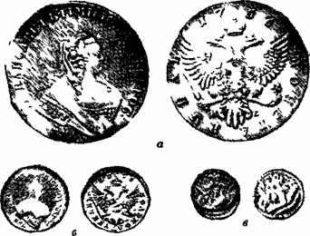
Рис. 90. Серебряные монеты 1756 г.:
а — рубль;
б — полуполтинник (3/4 натур вел);
в — пятачок.
Особое внимание в «Проекте и плане » уделялось поисковым работам на соседних обширных территориях Сибири. При этом Шлаттер учитывал уже установленные поисковые признаки и, как современный геолог, шел «от руды», «от известного»: «Понеже не безызвестно, что между Колывано-Воскресенскими и Нерчинскими заводами лежащие горы и места к знатным металлам подают немалую надежду, а особенно в Красноярском уезде около бывших медных заводов и в степях находятся немалые Чудския копи, таковые же как в Колыванском дистрикте, о которых известно, что прежние народы оныя копи производили более для сыскания и добывания самородного металла, состоящего в мельчайших частицах между мягкой земли и вохры, а тако со времени между настоящей работы надежные места исподволь, без великого и нарочного для того учреждения кошта, разведаны быть могут. Того ради надлежит из определенных и впредь определяемых на Нерчинских заводах горных служителей особую команду на то определить, дабы, как можно, вновь рудники между настоящей добычи и заводского произведения обысканы и разработаны были».
Таким образом, Шлаттер в своих рекомендациях по расширению сырьевой базы серебро — плавильной про-мышленности в 1755 г. впервые сформулировал ряд основных положений новой отрасли знаний, называе-мой сейчас «Организация геологоразведочных работ». Эти разделы «Проекта и плана .» Шлаттера в по-cледующие годы успешно выполнялись. В районе Нер-чинского завода, как уже указывалось, один за другим были открыты крупные месторождения серебра (из 13 крупнейших месторождений — 10 были открыты в 1757 — 1773 гг ) Добыча серебра здесь в 1763 г. увели-чилась по сравнению с 1754 г. в 6 — 7 раз, а в 1774 г. — в 13 раз.
Серебро АлтаяВ первой четверти XVIII в. вдоль Иртыша были зало-жены Омская, Ямышевская, Семипалатинская и Усть-Каменогорская крепости Они отделили Алтай от кир-гизских степей, и с тех пор Алтай вошел в сферу влияния России. К востоку от линии этих крепостей по долинам Алея, Чарыша, Убы селились беглые люди из России.
В. И Геннин об Алтае. Первое описание Рудного Алтая было сделано В. И Генниным, посетившим в 17ЗЗ г. Колывано-Воскресенские заводы. Он пишет:
«горы имеютца тамо превысокие, кряжь, которой нача-тиe свое имеет от Урала, тамо оные не очень дики, как Верхотурские, но против оных Верхотурских веселее. На тех горах и между ими имеютца в разных местах медные и железные богатые руды, лежат гнездами и жилами, на которые великая есть надежда, что оные руды постоянны и можно объявить по нынешней дальней об них работе смотрению, что здесь около Екатеринбурга, Перми и Кунгура токмо отрасли руды медной, а в тамошних местах прямой корень оных… И при оных рудах для плавки меди дворянином Акинфием Демидовым построен завод, который называется Колывано-Воскре-сенский, в нем шесть печей плавильных да один гор-махерской горн. И для охранения от набегов неспокойных народов обнесен тот завод полисадною крепостью.
В тамошних местах при реке Иртышу, выше Семи-полатной крепости верстах в 60,где пала речка Шульба, по той речке от устья вверх оной, например, в версте, от Убы реки в десяти верстах, найдено помянутым уже дворянином Акинфеем Демидовым старинных плавильных пять печей, при которых и сок имеетца и руд при тех печах есть не мало, а по признакам оные видом таковы, якобы серебряная руда».
Геннин первым из исследователей определил находящуюся на Воскресенском руднике близ «чудских» плавильных печей руду как серебряную. Ренованц подтверждает, что «руды сего рудника дали первое серебро». Но важнейшим рудником на Алтае вскоре стал Змеино-горский и, рассказывая о нем, Ренованц отмечает, что «Чудь охочая до горной работы сию жилу уже вскрыла, и сколько им орудия их по недостатку в железе и порохе дозволяли в рухлых охрах на 10 сажен глубины прокопали. Не токмо находят на оной их покрытые каменными кучами гробницы; но там находили также металлическими известьми покрытые кости одного в охрах под поверхностью провалившегося человека и при нем коженый мешок, наполненный изобилующими серебром и золотом охрами, так же местами и орудия их, состоящие из медных острых молотков, и из молотков из речных кругляков приготовленных».
От одного из демидовских мастеров — саксонца Тра-гера о незаконной добыче серебра Демидовым в 1744 г. узнало правительство. Зимой 1745 г. по поручению императрицы Елизаветы Петровны на Алтай прибыл начальник тульских заводов Беер с тем, чтобы «на Колывано — Воскресенских Демидова заводах как серебряную и золотую руду, так и прочие минералы, какие там найтится могут, надлежащим образом осмотреть». А через год алтайские рудники и заводы были переданы Кабинету ее величества, и Беер стал их начальником. Заселение Алтая быстро расширялось. Туда направляли ссыльных, не исключая ни престарелых, ни малолетних. Разрешали селиться заведомо беглым крепостным крестьянам.
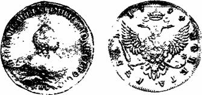
Рис. 91. Рубль 1754 г. с инициалами BS в обрезе рукава.
«Колыванская монета». В 60-х годах XVIII в. были построены Павловский сереброплавильный и Сузунский медеплавильный заводы, а вскоре новый сереброплавильный завод на р. Алее для переработки руд, сравнительно бедных серебром. Впервые были применены машины для водоотлива из рудников, приводившиеся в движение водяными колесами, что позволило увеличить глубину отработки и откачать несколько затопленных шахт.
Продолжались поиски новых месторождений. Девять поисковых партий в 1786 г. были отправлены к верховьям Чарыша, Ульбы, Убы и других рек для поисков месторождений руд серебра и золота и цветных поделочных камней. В числе руководителей партий был Филлип Риддер. Было открыто несколько богатых месторождений и в числе их знаменитое Риддерское. Рудознатцы искали медные и серебро-свинцовые руды на Алтае и по собственной инициативе. Слесарный ученик Григорий Зырянов открыл в 1794 г. названное его именем месторождение серебро-свинцовой руды, содержащее золото. Горный мастер Иван Заводин открыл серебро-свинцовое месторождение, названное Заводинским.
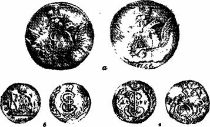
Рис. 92. Медные копейки, чеканенные из пуда меди:
а — на 8 рублей;
б — на 25 рублей (3/4 натур. вел.);
в — на 16 рублей (1/4 натур. вел.).
К концу XIX в. на Алтае было уже известно более 800 месторождений и, хотя разработкой были затронуты лишь несколько десятков, на протяжении многих лет там добывалось ежегодно более 1000 пудов серебра. Но затем производительность рудников и заводов резко упала, и к концу XIX в. они были закрыты.
За первые 10 лет на Алтае были добыты первые две тысячи пудов серебра. Количество это было еще очень невелико, тем не менее эть! две «круглые» цифры позволяют сделать некоторые предположения. Дело в том что в 1754 г. появился рублевик нового типа , {рис. 91) с еле различимыми в лупу инициалами медальера В. S. (Бенджамен Скотт) в обрезе рукава. По аналогии с показанными ранее рублевиками 1736 г. можно сделать вывод, что русское правительство новыми рублевиками отметило в 1754 г. десятилетие начала неуклонно развивавшейся добычи серебоа на Алтае, и что эти новые рублевики отчеканены из алтайского серебра. Это последняя серебряная русская монета, для которой хотя бы предположительно можно определить происхождение металла, из которого она отчеканена.
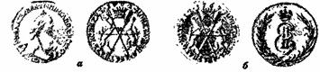
Рис. 93. Пробные серебряные монеты 1764 г. (4 /s натур. вел.).
Как уже отмечалось, И. А. Шлаттером был разработан «Проект и план…». В последней части этого документа, будучи обеспокоен вопросом финансирования в далекой Сибири рекомендуемых им мероприятий (в то время бумажных денег еще не было и для обращения в народе чеканилась медная монета из расчета на 8 рублей из пуда меди, т. е. даже перевоз этих денег в Сибирь был чрезвычайно сложным делом), И. А. Шлат-тер вносит еще одно предложение, представляющее несомненный исторический интерес. Идея И. А. Шлаттера заключается в том, чтобы одновременно с серебряными «медные заводы такого пространства… завесть, дабы в год 8000 пудов меди выплавлено быть могло для той пользы и надобности, о которой ниже сего объявлено будет».
«Польза» же и «надобность» заключалась в следующем: после того как серебряные «также и вышеупомянутые медные заводы построены будут, то должно на содержание оных заводов денежной суммы, дабы в оной остановки не было и золото и серебро барышем в казну приходило, толикое число меди, например, 000 пудов на оных заводах переделать в копейки по S рублей из пуда… то оным способом переделываемая медь, серебро и золото окупит так, что оные металлы без цены в казну… приходить будут».
Этот интересный проект был осуществлен И. А. Шлаттером, правда, не на Нерчинских заводах Берг-коллегии, а на Колыванских. На Колыванском монетном дворе серийная чеканка «сибирской монеты» производилась с 1768 по 1781 г. На рудниках здесь добывалась медная руда с некоторым трудно по тем временам отделимым количеством серебра и очень небольшим количеством золота, в связи с чем сибирская монета чеканилась на 25 рублей из пуда меди, хотя общегосударственная монета в то время чеканилась на 16 рублей из пуда (рис. 92).
Сибирская монета имела очень интересный вид: на одной из сторон был изображен герб Сибирского царства — два песца, поддерживающие щиток, на котором указано достоинство монеты, на второй — вензель Екатерины II с буквами К. М. («колыванская монета») внизу.
На пробных монетах была гуртовая надпись «колыванская медь». Серия состояла из монет 10, 5, 2, 1 копейка, денга, полушка.
За период 1768 — 1781 гг. было отчеканено сибирской медной монеты на 3799662 рубля, масса которой составила 152015 пудов. В этой монете имелось 1273 пудов серебра, стоившего 1 163357 рублей, и 11,5 пудов золота, стоившего 156934 рубля. В среднем ежегодно чеканилось сибирской медной монеты на 253 тыс. рублей, на которую расходовалось 10000 пудов серебристой меди.
Имеются пробные монеты чеканки 1764 г. достоинством в 20 коп. (рис. 93), так называемое «сибирское серебро». На оборотной стороне изображены два горностая, в одной лапе держащие царскую корону, а в другой лук, заднею лапою держат накрест составленные стрелы — это герб царства Сибирского. Эти монеты были изготовлены в виде образцов и приложены к проекту И. А. Шлаттера от 23 ноября 1763 г. Монета имела 54 пробу, поскольку засчитывалась имеющаяся в се — ребре не отделенная примесь золота. В лигатурном фунте должно быть 535/е золотника серебра, Ve золотника золота, 42 золотника меди. Проект не получил применения.